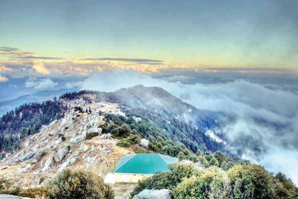
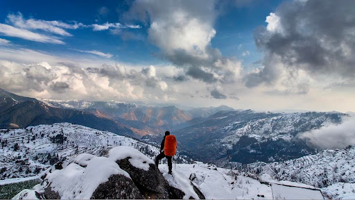
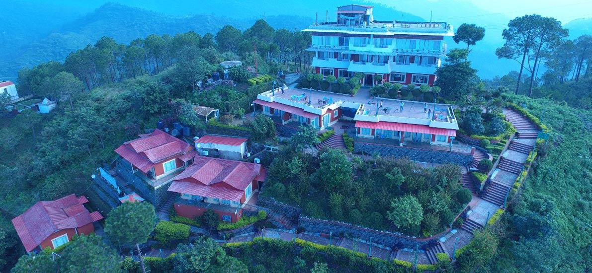

HIMACHAL PRADESH
OTHER DISTRICTS
SIRMAUR
Sirmaur is the southernmost district of Himachal Pradesh , northern India . It is largely mountainous and rural, with 90% of its population living in villages. Some of its towns include Nahan , Paonta sahib and Suketi , the latter known for the Shivalik Fossil Park.
| Country | INDIA |
|---|---|
| State | Himachal Pradesh |
| District | Solan |
| Headqurater | Nahan |
| Tehsils | 7 |
| Government
|
|
| AREA
|
|
| Population(2011)
|
|
| Demographics
|


